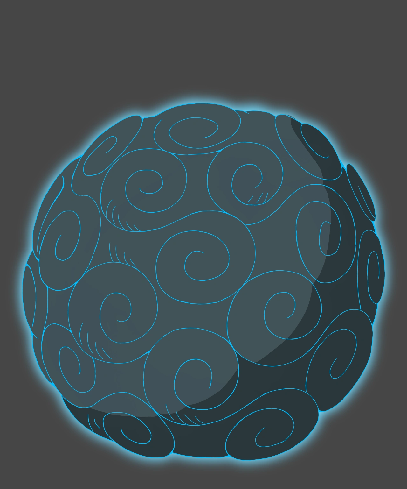

Demographics
Etymology
Strengths and Weaknesses
Usage
History
Trivia
Skills
Fighting Style
Techniques
Inventory
Stats
Talents
Haki
References and Notes
Biography
Arashi Arashi no Mi

Statistics
Japanese Name:
嵐嵐の実
Romanized Name:
Arashi Arashi no Mi
English Name:
Storm-Storm Fruit
Meaning:
Storm
Type:
Paramecia
Current User:
Xelyth Hynialle Arya Lyvaeno
[ Arashi Arashi no Mi ]
The
Arashi Arashi no Mi
is a Paramecia-type Devil Fruit that allows the user to control and manipulate storm clouds and the wind surrounding them.
[ Etymology ]
Arashi (嵐) is the Japanese word for "storm".
[ Strengths and Weaknesses ]
[ Usage ]
Techniques
???:
Server Data
Level 1:
Level 5:
Level 10:
Level 15:
Level 20:
Gains access to the Ultimate Technique: "???"
Level 25:
Level 30:
Level 35:
Level 40:
Level 45:
Level 50:
Grants access to the Ultimate Technique: ""
Level 55:
Level 60:
Level 65:
Level 70:
Level 75:
Level 80:
Awakening Potential
Level 85:
Level 90:
Level 95:
Level 100:
Grants access to the Ultimate Technique: ""
[ History ]
[ Trivia ]
This devil fruit is the sole reason Storm Island has remained in the sky for the past 700 years.